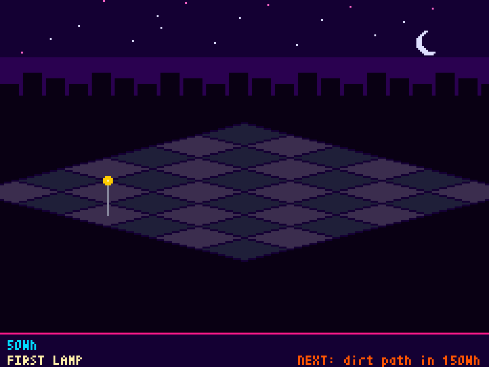
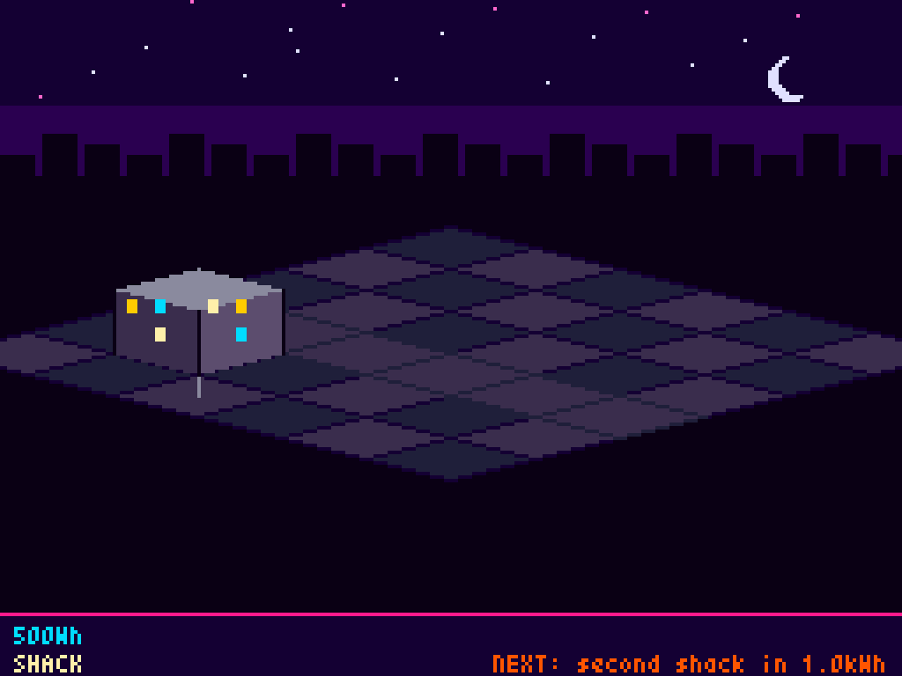
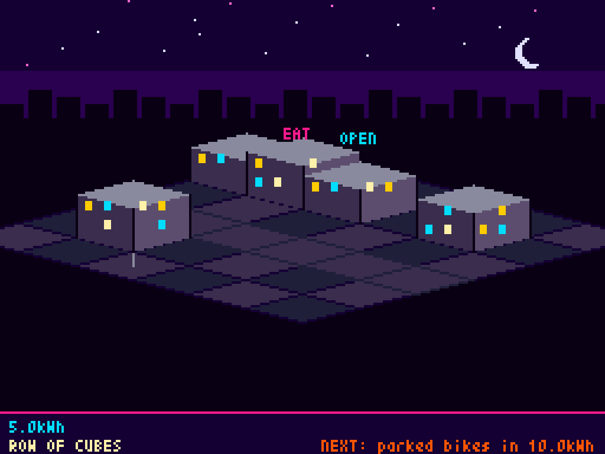
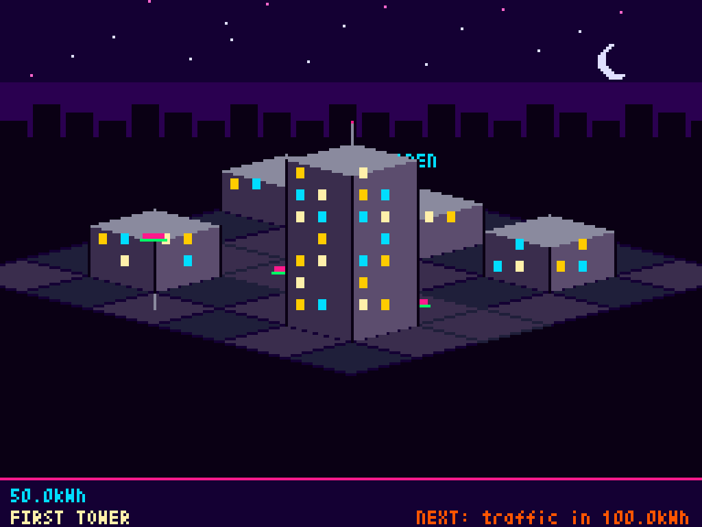
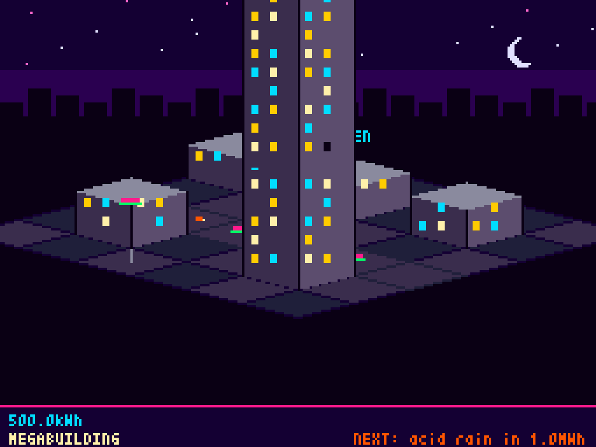
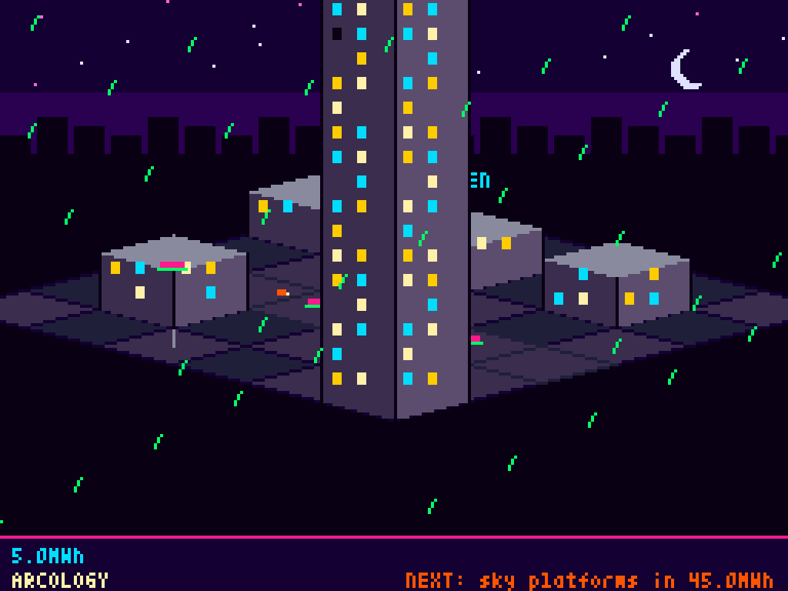

$ cwatts statusline
⚡ 2× active · 3.4 Wh session · 10.9 kWh today · 342.7 kWh total (≈ powering 11 US homes for a day)↑ that comparison rotates — same total, different framings. Try cwatts statusline yourself.
Claude Code records every token. Tokens are the raw material of an LLM's energy cost. claudewatts reads your local transcripts (~/.claude/projects/), multiplies by published Wh-per-token estimates, and shows you the result in units a human can actually feel — phone charges, kettle boils, days of running a fridge, weeks of powering a small village.
Five scopes, computed in one pass: the current session, every parallel session in the last 10 minutes, everything in this repo, today, and cumulative since you started.
It runs entirely on your machine. No network calls, no API keys, no telemetry.
Optional add-on. Run cwatts town and a tiny isometric cyberpunk city pops up in a window. The city is a pure function of your cumulative Wh — the same energy total always produces the same scene. There's no save file, no upgrade currency, no levelling treadmill. You just use Claude Code and the city grows.






/plugin marketplace add jonnonz1/claudewatts
/plugin install claudewatts@jonnonz1-claudewattsRestart Claude Code. The statusLine appears automatically.
$ brew install jonnonz1/tap/claudewatts
$ cwatts install claude$ pip install 'claudewatts[town]'
$ cwatts install claude
$ cwatts town$ git clone https://github.com/jonnonz1/claudewatts ~/claudewatts
$ ~/claudewatts/cwatts install claudeclaudewatts uses mid-range estimates from public disclosures (Google's 2025 Gemini figure, Epoch AI's GPT-4o estimate, Simon Couch's 2026 Claude Code study) and applies them to your real token counts. It is not precise — Anthropic does not publish per-token energy figures — but it is transparent. Every constant is an environment variable; every assumption is documented.